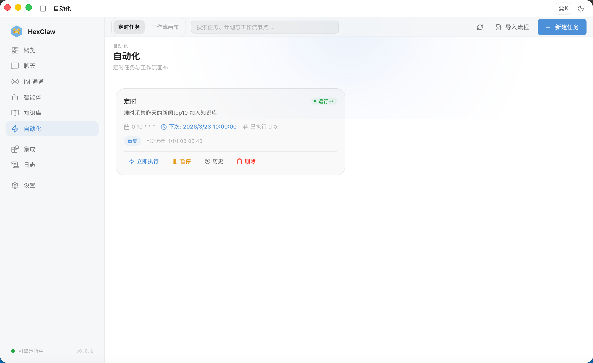
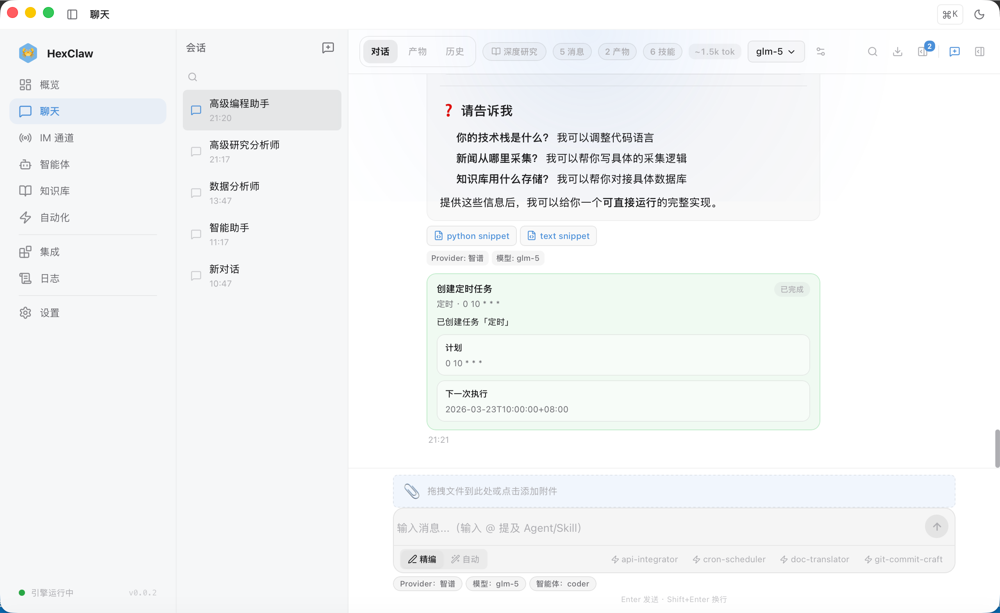
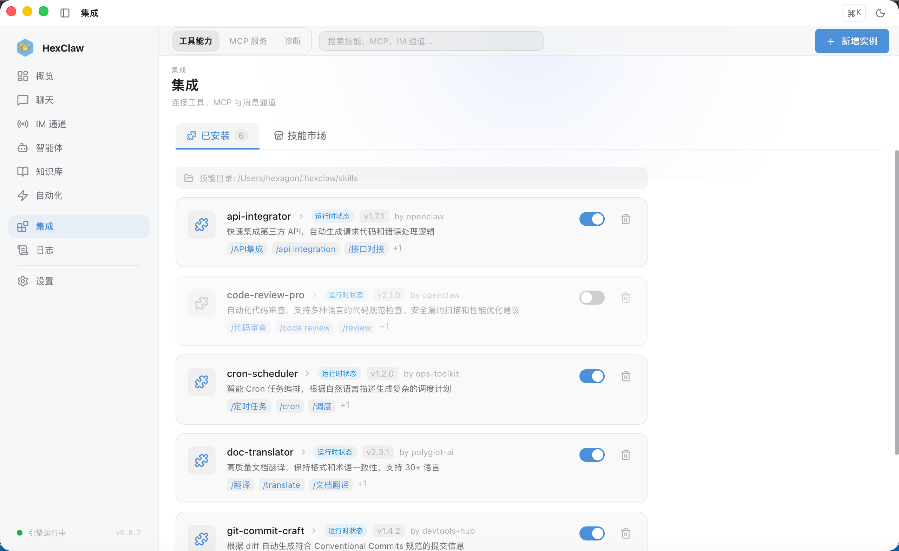
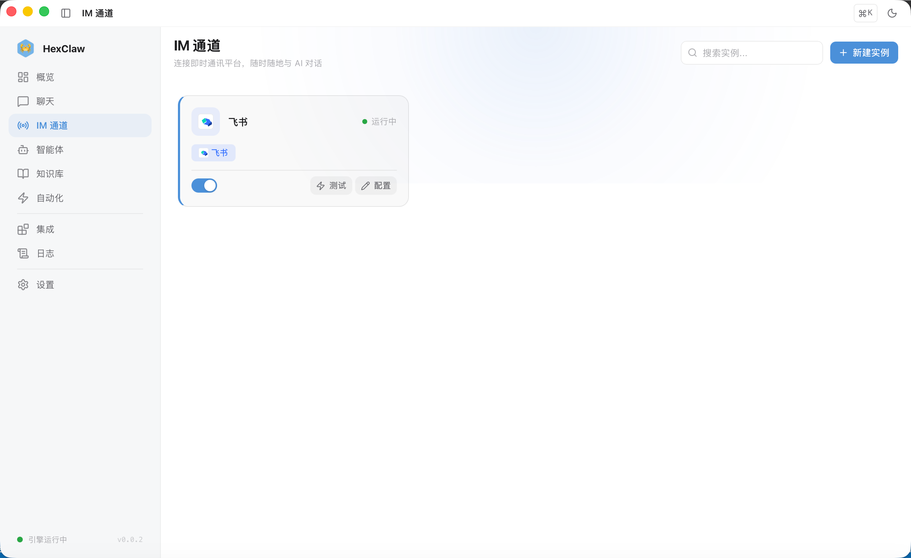
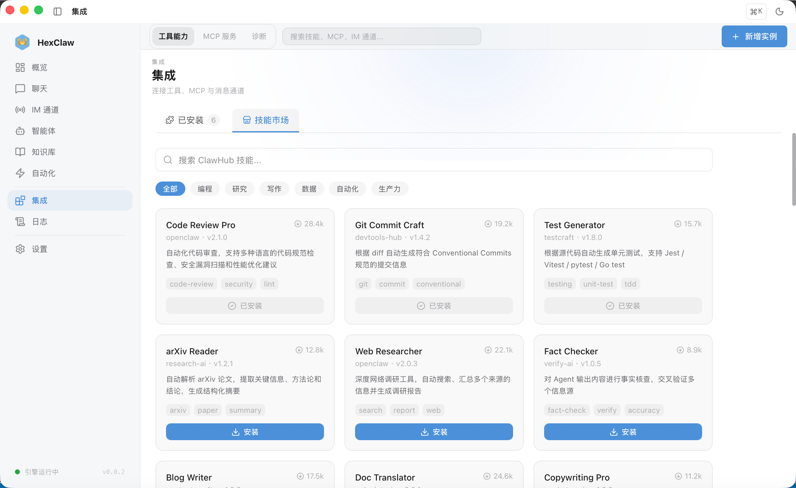

ئالىي ئىقتىدارلار
MCP كېلىشىم، بىلىم ئامبىرى RAG، مەنائەستە تۇتۇش، ۋاقىتلىق ۋەزىپە، ماھارەت بازىرى، كوماندا ھەمكارلىقىبىلەنبىخەتەرلىكئېغىز.
MCP كېلىشىمبىرلەشتۈرۈش
Model Context Protocol (MCP) 让 AI ئاجانت 能چاقىرىش外部قورالۋە服务.
注册 MCP مۇلازىمېتىر
- كىرىش MCP بەت
- چېكىش "قوشۇشمۇلازىمېتىر"
- تولدۇرۇشمۇلازىمېتىر名称ۋەئۇلىنىش地址
- تاللاشكېلىشىم类型:
stdio/sse/streamable_http - ئۇلىنىش后自动发现بولىدۇ用قورال
ئۇلىنىش成功后، MCP قورالبولىدۇ分配给 ئاجانت ئىشلىتىش. 实时显示ئۇلىنىش状态 (connected / disconnected / error) .
MCP مۇلازىمېتىرتەڭشەشمىسال
以下بولسا MCP مۇلازىمېتىر的 JSON تەڭشەشمىسال:
{
"mcpServers": {
"filesystem": {
"command": "npx",
"args": ["-y", "@anthropic-ai/mcp-filesystem"],
"env": { "ALLOWED_PATHS": "/Users/me/projects" }
}
}
}بىلىم ئامبىرى (RAG)
上传ھۆججەتلەر建立شەخسىيبىلىم ئامبىرى، AI 回答时自动检索相关内容.
قوللاش格式
- PDF، Markdown، TXT ھۆججەت
- 自动分块 (chunking) ۋە向量嵌入
- مەنائىزدەش检索
ئىشلىتىش流程
- كىرىش بىلىم ئامبىرى بەت
- 上传ھۆججەتلەر — قوللاش批量上传
- قاتارلىق待处理 (状态: processing → ready)
- 在سۆھبەت中، AI 自动检索بىلىم ئامبىرى中的相关内容作ئۈچۈنمۇھىت
مەنائەستە تۇتۇش
ھېشى AI 自动从سۆھبەت中提取并ساقلاشئەستە تۇتۇش، 跨كۆرۈشۈشداۋاملاشتۇرۇش.
- 自动捕获 — ئاجانت سۆھبەت中的关键ئۇچۇر自动ساقلاشئۈچۈنئەستە تۇتۇش
- مەنائىزدەش — 在ئەستە تۇتۇشبەت按关键词ياكىمەنا检索
- 类型过滤 — 按ئەستە تۇتۇش类型筛选
- 手动باشقۇرۇش — كۆرۈش، ئۆچۈرۈش، 批量清理
ۋاقىتلىق ۋەزىپە (Cron)
让 ئاجانت 按计划自动ئىجرا قىلىش任务.
قۇرۇشۋاقىتلىق ۋەزىپە
- كىرىش ۋاقىتلىق ۋەزىپە بەت
- چېكىش "قۇرۇش任务"
- تاللاشئىجرا قىلىش ئاجانت، تەڭشەك Cron 表达式، 填写ئەسكەرتىش词
- 启用任务
# Cron 表达式مىسال
0 9 * * * 每天早上 9 点
0 */2 * * * 每 2 小时
0 9 * * 1-5 工作日早上 9 点قوللاش手动触发، ئىجرا قىلىش历史كۆرۈش، 心跳监控.


ماھارەت بازىرى
浏览ۋەئورنىتىشماھارەتقوشۇمچە扩展 ئاجانت 能力:
- 分类: 沟通، 效率، 开发، سانلىق-مەلۇمات
- ئورنىتىش: بىر كۇنۇپكائورنىتىش، 按 ئاجانت 启用/禁用
- 评分: جامائەت评分ۋەچۈشۈرۈش量排序
- تەڭشەش: 部分ماھارەتقوللاشئىختىيارىي参数

كوماندا ھەمكارلىقى
قوللاش多人共享ۋە协作:
- 共享 ئاجانت — 团队内共享 ئاجانت 模板
- 成员رول — باشقۇرۇش员 (admin) ، 成员 (member) ، كۆرۈش者 (viewer)
- كۆرۈشۈش共享 — 分享سۆھبەتخاتىرە给团队
- بولىدۇ见性 — 公开 (public) / 团队 (team) / شەخسىي (private)
بىخەتەرلىكئېغىز
在 تەڭشەك → بىخەتەرلىك 中تەڭشەش:
| ئىقتىدار | چۈشەندۈرۈش |
|---|---|
| بىخەتەرلىكئېغىز | 启用/禁用بىخەتەرلىكتەكشۈرۈش |
| ئەسكەرتىش词注入检测 | 自动检测并拦截恶意ئەسكەرتىش词 |
| PII 过滤 | 自动过滤个人敏感ئۇچۇر |
| 内容过滤 | 过滤不当内容 |
| Token 上限 | 单次请求最大 Token 数 (256 ~ 128,000) |
| 速率限制 | 每分钟请求数 (1 ~ 600 RPM) |
深度研究ھالەت
在سۆھبەت页ئالماشتۇرۇش到深度研究بەلگە، 输入研究主题后، ئاجانت بولىدۇ自动ئىجرا قىلىش多步调研:
- ئىزدەش — 检索相关资料ۋە来源
- ئانالىز — 深度ئانالىز各个来源的内容
- 综合 — 交叉对比، 提炼关键观点
- 生成报告 — 输出结构化研究报告، 附带引用来源
研究过程中بولىدۇ显示实时进度面板، بولىدۇ折叠/展开كۆرۈش当前阶段.
IM ئېقىم
ھېشى AI قوللاشئۇلىنىش多种即时通讯平台، 让你ئارقىلىق手机ئۇچۇر远程بىلەن AI سۆھبىتى. كىرىش 侧边栏 → IM ئېقىم تەڭشەش:
| 平台 | تەڭشەش项 | چۈشەندۈرۈش |
|---|---|---|
| 飞书 | App ID + App Secret | 在飞书开放平台قۇرۇش企业自建ئەپ |
| 钉钉 | App Key + App Secret + Robot Code | 在钉钉开放平台قۇرۇش内部ئەپ |
| 企业微信 | Corp ID + ئاجانت ID + Secret | 在企业微信باشقۇرۇش后台قۇرۇش自建ئەپ |
| 微信 | App ID + App Secret + Token | ئېھتىياج微信服务号 |
| Slack | Bot Token + Signing Secret | 在 Slack API قۇرۇش App |
| Discord | Bot Token | 在 Discord Developer Portal قۇرۇش Bot |
| Telegram | Bot Token | ئارقىلىق @BotFather قۇرۇش |
تەڭشەشساقلاش后ئېھتىياجقايتا قوزغىتىش Engine 生效. ھەر بىر平台卡片上有"سىناشئۇلىنىش"كۇنۇپكابولىدۇ验证تەڭشەش.

Webhook 通知推送
在 تەڭشەك → 通知推送 中تەڭشەش Webhook، 当任务完成، ئاجانت ئىجرا قىلىش结束ياكى发生错误时自动推送通知:
- 企业微信 — 机器人 Webhook URL
- 飞书 — ئىختىيارىي机器人 Webhook
- 钉钉 — 群机器人 Webhook
- ئىختىيارىي — 任意 HTTP POST 端点
ھەر بىر Webhook بولىدۇتەڭشەش触发事件: 任务完成، ئاجانت 完成، 错误通知.
ClawHub ماھارەت بازىرى
在 侧边栏 → Skill → ماھارەت بازىرى بەلگە页، بولىدۇ浏览ۋەئورنىتىش来自 OpenClaw جامائەت的ماھارەت:
- قوللاش按分类筛选: 编程، 研究، 写作، سانلىق-مەلۇمات، 自动化، 生产力
- ئىزدەش关键词快速定位
- بىر كۇنۇپكائورنىتىش، ئورنىتىش后在"已ئورنىتىش"بەلگەكۆرۈش
- ھەر بىرماھارەت显示作者، نەشرى، چۈشۈرۈش量ۋەبەلگە
يەنەبولىدۇئارقىلىق本地ئورنىتىش方式ئەكىرىش .md 格式的 Skill ھۆججەت.
